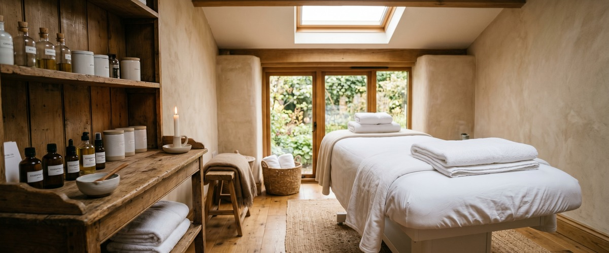

If you work in Glasgow city centre, you've probably noticed things look a little different lately.

Roads closed, pavements ripped up, new trees appearing where traffic lanes used to be. This isn't disruption for its own sake. The Glasgow City Region City Deal is a £1.13 billion investment programme reshaping the streets, spaces, and commute across the city in ways that will last long after the last cone is lifted. Here's what's actually happening, and what it means for people who come into the city centre every day.
The heart of the city centre change is the Avenues programme. It has been described as the biggest overhaul of Glasgow's streets since the 1970s. Funded through £115 million of City Deal investment, it is redesigning key streets to give more space back to people, cyclists, and greenery.
Active projects include Argyle Street West, Cowcaddens Road, North Hanover Street, Duke Street, South Portland Street, and several others. Most are due to finish through spring and into late 2026. Work on Argyle Street East and Stockwell Street begins in the first half of this year.
What does that mean in practice? Wider pavements, new cycle lanes, faster bus journeys, rain gardens, and hundreds of new trees. For anyone who walks from Buchanan Street subway to an office on West George Street or Blythswood Square, the difference is already visible.
George Square is one of the most significant projects in the whole programme. Contractors went on site in May 2025. The redesigned square is due to be finished by August 2026, featuring high-quality stone, sensory gardens, a water feature, a raised lawn, and covered seating.
For city centre workers, this matters beyond how things look. A properly usable George Square becomes a lunchtime destination — somewhere to step away from the desk and breathe. It also makes a better first impression for visitors and clients coming into the city.
The Avenues around West George Street and the City Chambers frontage are already largely complete. If you haven't walked through lately, it's worth doing. The August 2026 completion will mark a real shift in what it feels like to work in the heart of Glasgow. You can book a session at Glasgow Thai Massage afterwards — we're a short walk from the square on West Nile Street.
Alongside the City Deal work, the Avenues Plus programme is funded through £21 million of Scottish Government investment. It extends the changes to streets on the edge of the city centre. Projects on Duke Street and John Knox Street link up with work already under way in the East End, connecting the city centre to areas that previously felt cut off.
For commuters, the practical result is more protected cycle lanes, better walking routes, and bus signals that move people rather than single cars. If you've been thinking about cycling into the office, the infrastructure is improving in a real way. For those who walk, the extra greenery and wider pavements make the daily commute noticeably better.
Less car use in the city centre has other benefits too. Less circling for parking, less congestion on key routes, and streets that feel more human during the lunch hour.
The Buchanan Galleries redevelopment adds another layer to the city centre's changing character. Approved by Glasgow City Council and scheduled to begin in the second half of 2026, the plans — developed by Threesixty Architecture — will refurbish and extend the existing centre. A new food hall and improved retail space are part of the design.
For workers around Buchanan Street and the St Vincent Street financial core, a better lunch and after-work offer is taking shape. Combined with the Argyle Street Avenue, which will create a connected walking and cycling route from the west end of the precinct to the east, this part of the city centre will look very different by 2027.
There's no getting around it — rebuilding a city creates short-term disruption. Diversions, noise, and changed bus routes are a real part of working here right now. That kind of daily friction adds up across a working week.
It's worth thinking about how you manage that. At Glasgow Thai Massage on West Nile Street, we see a lot of city centre workers. Many arrive carrying not just desk tension, but the built-up stress of a city being remade around them.
Traditional Thai massage uses assisted stretching and acupressure along the body's sen energy lines. It releases deep muscle tension and helps reset both body and mind at the end of a hard week.
For neck and shoulder stiffness from long days at a desk, Thai sports massage is worth considering too. It focuses on muscle recovery and range of motion.
The city centre Glasgow workers are commuting into in 2026 is in real transition. The disruption is real, but so is what's being built. By the time the last Avenue is done and George Square reopens, the case for spending your working day in the city will be much stronger than it was five years ago.
The Glasgow City Region City Deal is a £1.13 billion investment programme. It is jointly funded by the UK Government and Scottish Government, with contributions from the eight local authorities of the Glasgow City Region. It funds 21 projects focused on improving connections, unlocking land for development, and creating jobs. The Avenues programme, which is transforming city centre streets, is one of its flagship projects.
As of April 2026, active Avenues work is ongoing or recently finished on Argyle Street West, North Hanover Street, Cowcaddens Road, Duke Street, South Portland Street, and areas around George Square. New work on Argyle Street East and Stockwell Street is starting in the first half of 2026. Clyde Street and High Street Avenues are expected to begin later in the year. Glasgow City Council publishes regular updates on live works at glasgow.gov.uk.
The main George Square work is due to finish in August 2026. The Avenues around West George Street and the City Chambers frontage are already largely complete. Some connected Avenue work extends to April 2027. The finished square will have new stone paving, a water feature, sensory gardens, and improved lighting.
The Avenues programme is designed to make walking and cycling safer and more appealing. Changes include protected cycle lanes, upgraded crossings, better bus signal timing, and much wider pavements. The Argyle Street East Avenue will include a new segregated cycle link. The Avenues Plus programme extends similar changes to streets on the city centre fringe.
Yes. Glasgow Thai Massage is on the third floor of Victoria Chambers at 142 West Nile Street, just off Sauchiehall Street. It's a few minutes' walk from Buchanan Street subway station. West Nile Street is not a current Avenues construction zone, so getting here on foot from the subway or nearby bus stops is easy. You can check current routes and book your appointment online in advance.